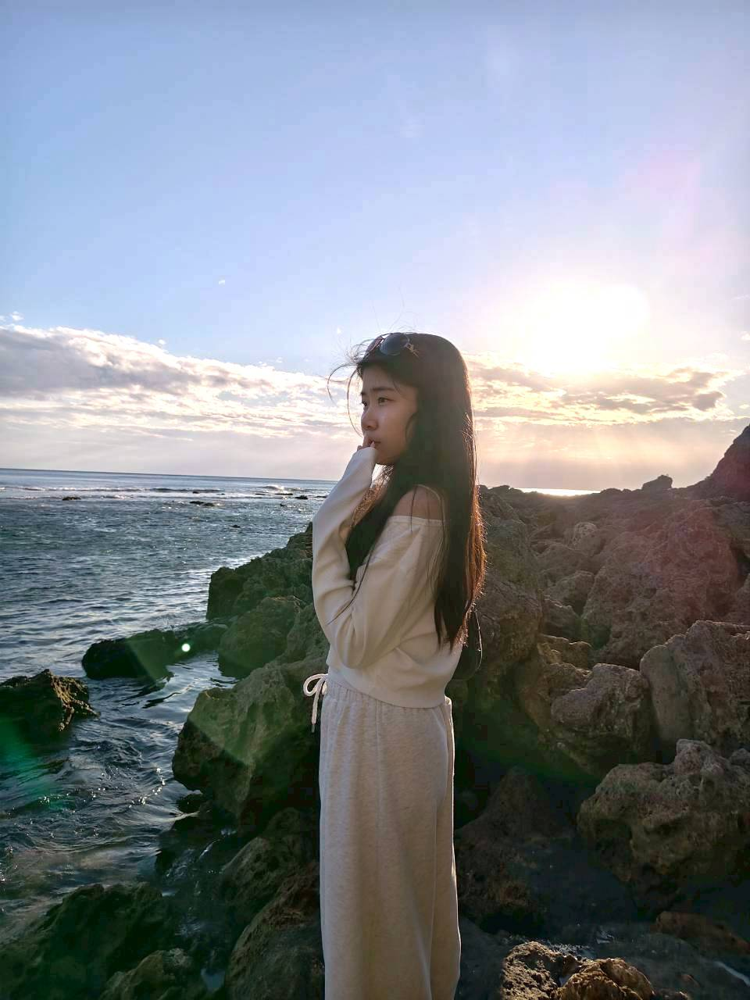
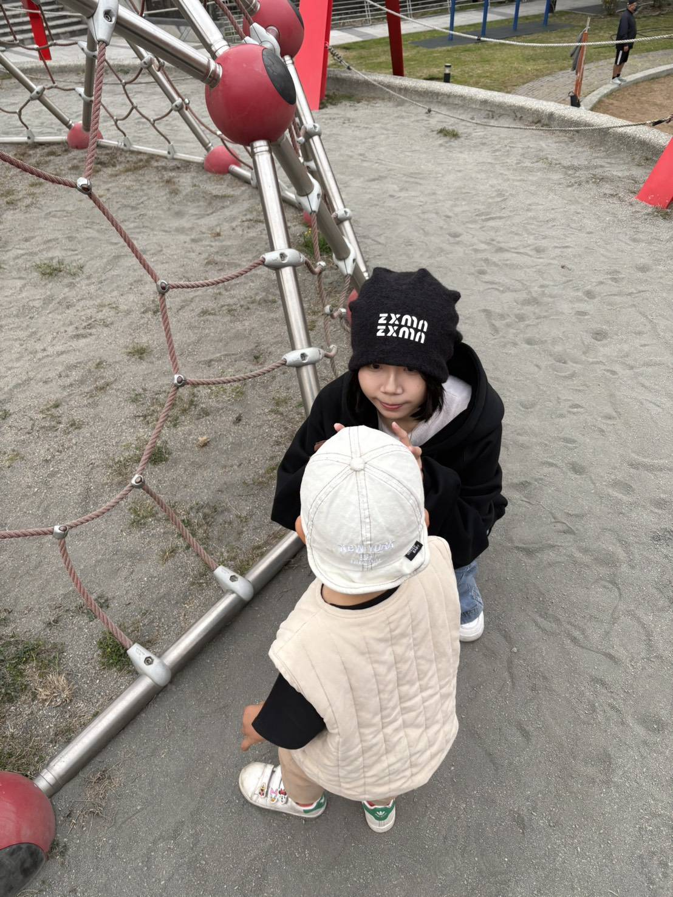
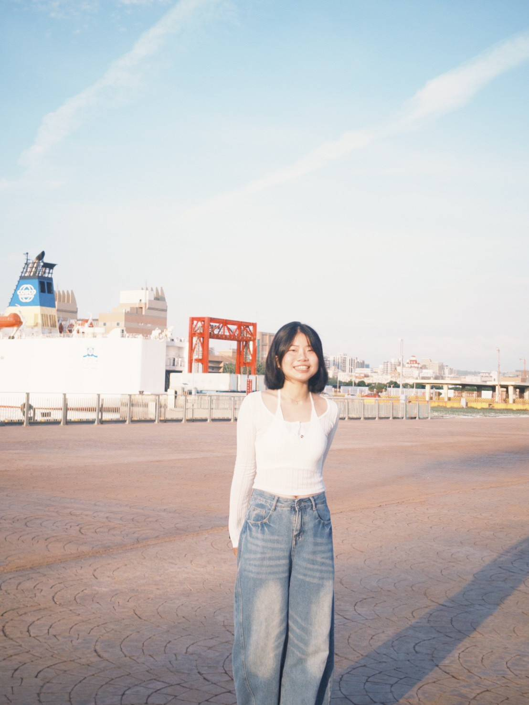
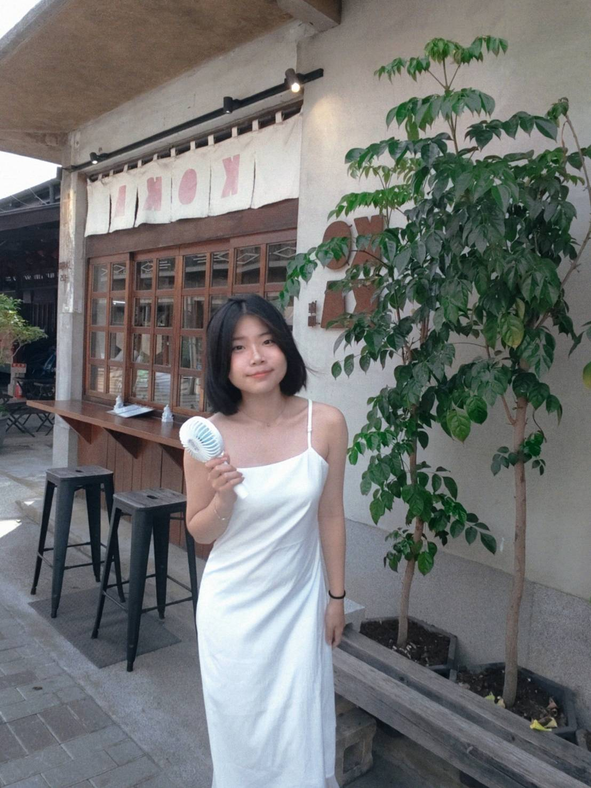
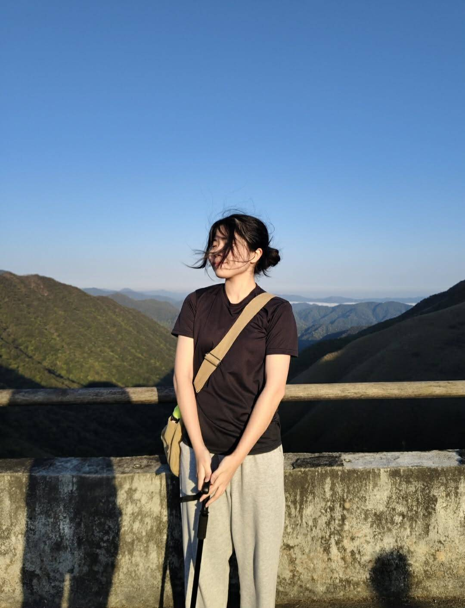
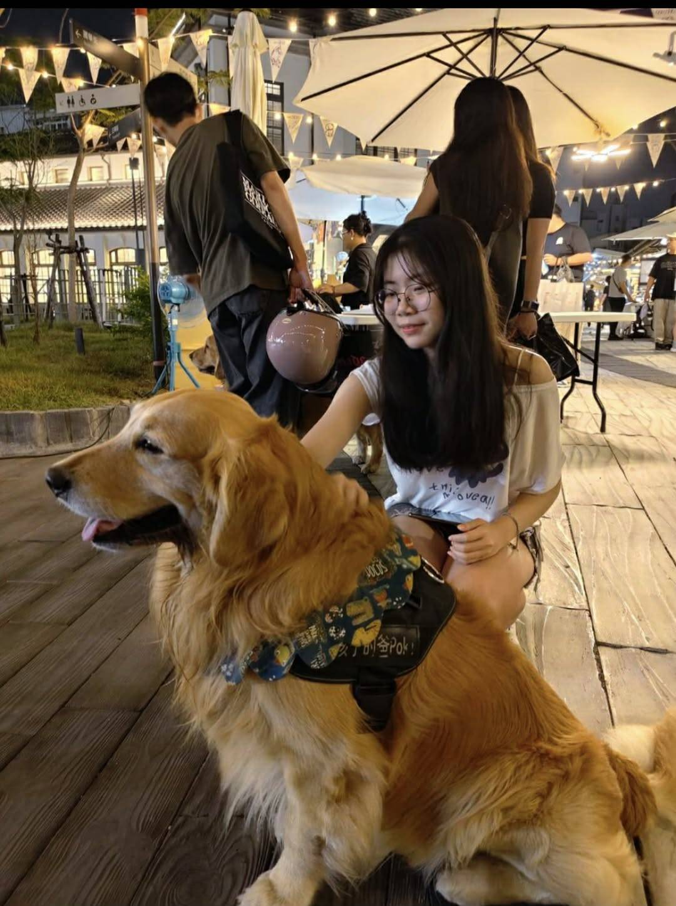
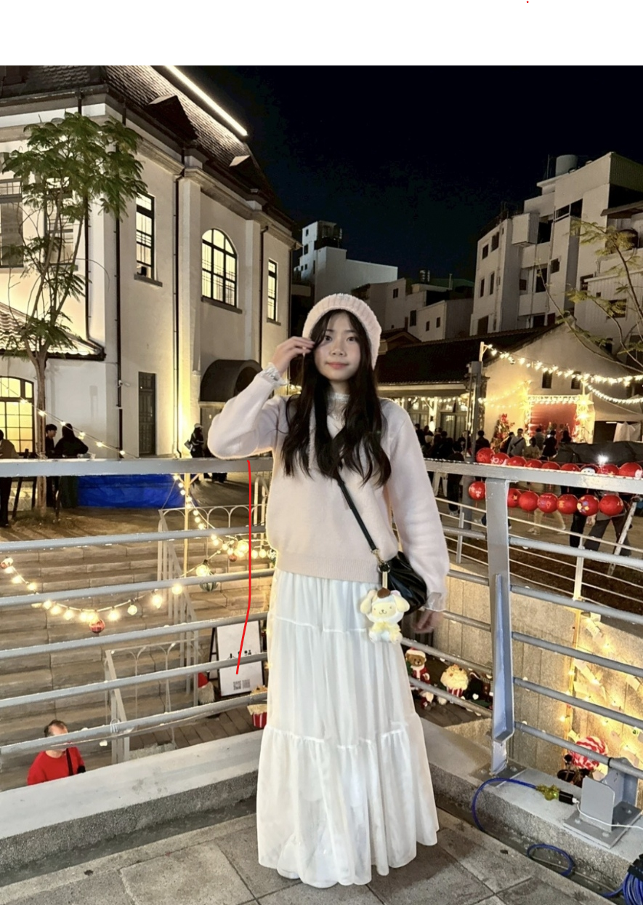

個人資料
- • 姓名： 黃筱嵐
- • 出生年月日： 2006 年 7 月 9 日（今年 20 歲）
- • 聯絡電話： 0970-673-971

自我介紹
您好～我是筱嵐，今年 20 歲來自台南。
平常喜歡運動、旅遊和接觸大自然，很享受待在海邊放空，或和朋友一起探索新地方。個性開朗、好相處，喜歡認識不同的人，也很期待透過換宿去體驗不一樣的生活方式。已有機車駕照且有騎乘經驗，生活自理能力佳，做事細心，對環境整潔也相當重視。
換宿動機
一直很想體驗離島生活，很喜歡大海和戶外活動。想透過打工換宿深度體驗當地生活。澎湖對我來說一直是很吸引人的地方，希望能放慢步調感受島上的生活節奏，也很期待透過換宿認識來自不同地方的朋友，互相交流。閒暇時希望可以和當地居民或其他小幫手一起到海邊游泳、探索澎湖。
打工經驗
民宿打工換宿：之前在墾丁做過房務和環境整理。有過實際經驗，熟悉整理房務的流程，做事也算細心，能維持好環境的整潔。加上體驗過換宿，習慣團體生活，跟其他小幫手都能處得很好。
學校辦公室工讀（處室助理）：平常在學校辦公室打工，第一線會遇到各種不同的人來問問題，所以滿擅長應對進退和溝通的。老師們交代的各項雜事也能準確、負責任地做好。
專長與個人特質
- 有換宿經驗
- 喜歡運動
- 會扯鈴
- 文書處理與電腦操作
- 好相處，稍微會打麻將~
期望換宿時間
8/10～8/27。時間可彈性配合安排。
（因 8/28 家中有重要活動，需提前返家）
個人生活照





